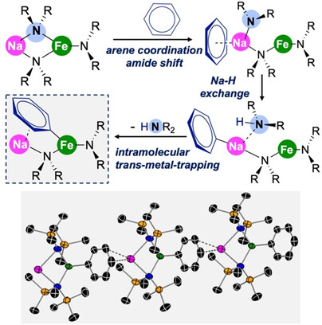

Advanced Example: Na-Fe systems
In this example we will introduce some advanced assembler features of DART, in particular the ability to generate libraries of multi-metallic complexes with bridging ligands and haptically coordinating ligands.
We took inspiration from a recently published work on the ferration of aromatic \(\pi\)-coordinating ligands via cooperative Na-Fe catalysis. In this work, the authors synthesized a series of bimetallic Na-Fe complexes with HMDS (HMDS=N{SiMe3}2) ligands and different aromatic haptically coordinating ligands such as benzene.
Using DART, we will replicate this bimetallic system and expand the chemical space by replacing the HMDS ligand with one of 111 amide ligands from the MetaLig database. This example will highlight the following capabilities of DART:
Assemble multi-metallic complexes with different metal centers
Add bridging ligands between two metal centers
Coordinate haptically coordinating ligands to metal centers
Query ligands by sub-structure, e.g. amide ligands
Fix certain ligands to always be present in each complex
Use chemically equivalent ligands on multiple binding sites
Query Benzene and Amide Ligands
Figure 1 shows a figure from the original publication. The top-left shows a Na-Fe complex with two bridging HMDS ligands between Na and Fe and a terminal HMDS ligand at Fe. We will generate this system with an additional benzene ligand coordinating terminally to the Na center. In addition to HMDS, we will explore other amide ligands, as a demonstration of how to use DART to screen for complexes with a certain type of ligand.
{kind=link}

Figure 1: Original publication figure of the Na-Fe complex with HMDS (top left). From Angew. Chem. Int. Ed. 2021, 60, 10901–10906, with permission.
Our first step is to create two ligand databases: one which contains only benzene and one which contains all the amide ligands we want to screen. These ligand databases will be used in the assembler. In order to search the MetaLig database for these two ligands, we can first use the dbinfo command to get an overview of all ligands in the MetaLig database:
DARTassembler dbinfo --db metalig
This will create two files, concat_ligand_metalig.xyz and ligand_metalig_info.csv. The .csv file contains information on all ligands in the MetaLig database, including their Graph ID, which is a unique identifier for each ligand. We can search for benzene by looking for 'stoichiometry'='C6H5'. This will actually give us 4 hits: unq_CSD-PABYUO-06-a, unq_CSD-PITLUC-02-b, unq_CSD-TALYIO-06-a, unq_CSD-NUNTOI-06-b. We can check their structures either in the .xyz file searching for the exact ligand name, or in the public CSD viewer by searching for the origin complexes of these ligands - PABYUO, PITLUC, TALYIO, NUNTOI. This shows that clearly the benzene ligand is the first one called unq_CSD-PABYUO-06-a. This is not accidental: in most cases, when you search for a single common ligand like benzene, the correct one will actually be the first one in the list, because the MetaLig database is roughly sorted by the frequency of occurrence of ligands in the CSD. We can now search the MetaLig database for this specific ligand by its unique name using the DART Ligandfilters. Please create a new input file C6H6_ligandfilters.yml with the following content:
# file: C6H6_ligandfilters.yml
outpath: ligands/C6H6.jsonlines
n: 500
filters:
- filter: 'property'
name: 'unique_name'
values: [ unq_CSD-PABYUO-06-a ]
We can set n: 500 to speed up the reading of the MetaLig database since we know that there is only one ligand that will pass the filter, and we know it’s common enough to probably be within the first 500 ligands.
Now, we can search the MetaLig database for HMDS and other amide ligands. Please create a new input file amide_ligandfilters.yml with the following content:
# file: amide_ligandfilters.yml
outpath: ligands/amide.jsonlines # path or nothing
filters:
- filter: 'composition'
elements: N
instruction: 'must_contain_and_only_contain'
only_donors: True
- filter: 'property'
name: 'charge'
values: [ -1 ]
- filter: 'smarts'
smarts: '[N&D3X3!a](-[Hg])(-[C,Si])(-[C,Si])'
should_contain: True
include_metal: True
This input file for the DART Ligandfilters will search for amide ligands with charge -1 and a single N donor. The option include_metal: True makes sure that DART internally includes a pseudo Hg atom bound to all donor atoms of each ligand via a single bond. This enables users to write SMARTS patterns that are targeted to donor atoms specifically. The provided SMARTS pattern will then match every ligand where a N donor atom that is not part of an aromatic ring has two single bonds to either C or Si atoms, plus a third single bond to the pseudo Hg atom. For more info about the SMARTS filter see its documentation.
Now we can run the ligand filters:
DARTassembler ligandfilters --input C6H6_ligandfilters.yml
DARTassembler ligandfilters --input amide_ligandfilters.yml
This will create the two ligand databases C6H6.jsonlines and amide.jsonlines in the folder ligands.
Assemble the Na-Fe Complexes
Now, we want to generate the bimetallic Na-Fe complexes with these two ligands such that the benzene coordinates terminally to Na, there are two amide ligands bridging between Na and Fe, and the Fe has an additional terminal amide ligand. To achieve this, we create a new assembler configuration file NaFe_assembler.yml with the following content:
# file: NaFe_assembler.yml
output_directory: NaFe
batches:
- name: 'Na-Fe-amide'
ligand_db_files:
- ligands/C6H6.jsonlines # benzene @ Na
- ligands/amide.jsonlines # amide top bridging Na & Fe
- same_as_previous # amide bottom bridging Na & Fe
- same_as_previous # amide @ Fe
target_vectors:
- [ [-1, 0, 0] ] # benzene @ Na
- [ [0, 0, 1] ] # amide top bridging Na & Fe
- [ [0, 0, -1] ] # amide bottom bridging Na & Fe
- [ [1, 0, 0] ] # amide @ Fe
ligand_origins:
- [0, 0, 0] # benzene @ Na
- [2, 0, 0] # amide top bridging Na & Fe
- [2, 0, 0] # amide bottom bridging Na & Fe
- [4, 0, 0] # amide @ Fe
metal_centers:
- [ ['Na', [0, 0, 0]] ] # benzene @ Na
- [ ['Na', [0, 0, 0]], ['Fe', [4, 0, 0]] ] # amide top bridging Na & Fe
- [ ['Na', [0, 0, 0]], ['Fe', [4, 0, 0]] ] # amide bottom bridging Na & Fe
- [ ['Fe', [4, 0, 0]] ] # amide @ Fe
n_max_complexes: 'all'
Let’s go through the options specified here. First, in the ligand_db_files we provide four strings. The first two are paths to the benzene and amide ligand databases we created before. The last two entries are same_as_previous, which is a special keyword that tells DART to use the exact same ligand as for the previous binding site. If instead you would simply provide ligands/amide.jsonlines again, DART would sample a new ligand from the amide database for each binding site. By using same_as_previous, we enforce that both bridging amide ligands plus the terminal amide ligand at Fe are all the same ligand. We have chosen this option to resemble the original publication where all three amide ligands were HMDS.
Here, we are also specifying four binding sites in the following order:
terminal benzene at Na
bridging amide between Na and Fe (top)
bridging amide between Na and Fe (bottom)
terminal amide at Fe
The ligand_origins specify the position of each ligands original CSD metal center. The target_vectors specify the direction in which the donor atom will point. So, for the terminal amide at Fe, the donor atom will point in the +x direction while being centered at [4, 0, 0]. For the bridging amide ligands, the donor atoms will point in the +z and -z direction respectively while being centered at [2, 0, 0], which is halfway between Na at [0, 0, 0] and Fe at [4, 0, 0]. So, the combination of ligand_origins and target_vectors fully specifies the placement of each ligand in the complex.
We have also specified two metal centers by writing element + 3D coordinates for each metal center:
[ Na, [0, 0, 0] ]
[ Fe, [4, 0, 0] ]
This means that Na will be placed at the origin of the coordinate system, and Fe will be placed 4 Å away from Na in the x-direction. The distance of 4 Å between Na and Fe was chosen as an arbitrary guess here, often it will be based on experimental or theoretical values. The metal_centers option is a list with with one entry for each ligand. For each ligand, it states the metal center(s) to which the ligand coordinates. The metal centers have to be repeated whenever a ligand coordinates to this metal.
Why is this so complicated? Why not just specify each metal center once for the entire complex? The reason is that DART needs to know which ligand coordinates to which metal center in order to generate the correct molecular graph for each complex. Without this information, DART would have to connect all donor atoms of all donors to all metals, which would lead to nonsense molecular graphs. So, while the 3D structure is fully defined with just the specification of the target_vectors and ligand_origins, the metal_centers option is necessary to define the connectivity of the complex.
Moreover, this format also allows for setting default ligand_origins. For example, if you remove the entire definition of the ligand_origins for all the ligands, you will still get exactly the same output. That is because if ligand_origins is not specified, DART will automatically set the ligand_origins for each ligand to the mean positions of all metal centers this ligand is coordinated to. For bridging ligands, this will be the midpoint between the two metals, while for terminal ligands it will be the position of the metal center itself. This is often a good default choice and in many cases you won’t need to specify ligand_origins, but we wanted to show you as well how to use this option in case you want to shift the ligand position away from the metal center.
Now, you can run the assembler:
DARTassembler assembler --input NaFe_assembler.yml
Look at the structure of the generated complexes with:
ase gui NaFe/batches/Na-Fe-amide/concat_passed_isomers.xyz
You now have 91 distinct complexes generated in a similar chemical space as the original Na-Fe complex, all exactly adhering to the specified ligand properties. Each complex has a terminal benzene at Na, two bridging amide ligands between Na and Fe, and a terminal amide ligand at Fe. Can you spot the complex with the actual HMDS ligand? Tip: it should come quite early in the list since HMDS is a common ligand and by specifying n_max_complexes: 'all', DART simply makes all possible combinations of ligands starting from the top of the provided ligand databases.